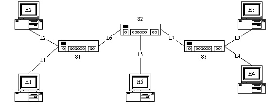

- Summary of
- "RSVP : A New
Resource
- ReSerVation Protocol
- (From IEEE Network , 1993
Sep.)"
Why RSVP
- First, many of these applications are very sensitive to
the quality of service their packets receive.
- Second, these new applications are not solely
point-to-point, with a single sender and a single
receiver of data; instead, they are often
multipoint-to-multipoint with several senders and
receivers of data.
Normal Components
- Flow Specification : describes both the
characteristics of the traffic stream sent by the
source, and the service requirements of the
application. In some sense, the flowspec is the central
component of the architecture, since it embodies the
service interface that applications intract with.
- Routing : decide how to transport packets from
the source to the receiver of the flow. P.S.None of
the current proposals have yet dealt sufficiently with
the interaction between routing and quality of service
constraints.
- Resource Reservatiopn : It is usually necessary
to set aside certain resources, such as a share of
bandwidth or a number of buffers, for that flow. And to
create and maintain resource reservations on each link
along the transport path.
- Admission Control : Determine which reservation
requests to grant(同意) and which to deny, thereby
maintaining the network load at an appropriate level.
- Packet Scheduling : Decide whether or not
transmit the next packet, and which is next.
- Summary : RSVP is receiver-oriented : The
receiver of the data flow is responsible for the
initiation of the resource reservation.
RSVP Design Goals
- Accomodate hetergeneous receivers : To provide
the ability for heterogeneous receivers to make
reservations specifically tailored to their own needs.
- Adapt to changing multicast group membership :
To deal gracefully with changes in the multicast group
membership. (減少無謂之資源浪費)
- Exploit(開發；利用) the resource needs of
different applications in order to use network resource
efficiently : To allow end users to specify their
application needs, so the aggregate(合計的) resources
actually needed by that group.
- Allow receivers to switch channels : A receiver
should be able to control which packets are carried on
its reserved(保留的) resources, not only what gets
displayed on its local screen. Moreover, a receiver
should be able to switch among sources without the risk
of having the change request denied, as could occur if a
new reservation request had to be submitted in order to
"switch channels". The goal is to enable this
channel changing feature.
- Adopt to changes in the underlying(基礎的) unicast
and multicast routers : RSVP is not a routing
protocol and should avoid replication(複製) any routing
functions. RSVP's task is to establish and maintain
resource reservations over a path or a distribution tree,
independent of how the path or tree was created. RSVP
should deal gracefully with such changes in routers,
automatically reestablishing the resource reservations
along the new paths as long as adequate resources are
available.
- Control protocol overhead so that it does not grow
linearly (or worse) with the number of participants
: It means both avoiding the explosion(劇增) in
protocol overhead when group size gets large and also
incorporating(加入) tunable parameters so that the
amount of protocol overhead can be adjusted.
- Make the design modular to accomodate heterogeneous
underlying technologies : Our design goal is not
specific to the problem at hand but rtather is a general
matter of modular design. Clearly a particular
implementation on RSVP will be tied quite closely to the
flowspec and interfaces used by the routing and admission
control algorithms. However, the general protocol design
should be independent of these. This design goal makes
RSVP deployable in many contexts. For optimally efficient
routing decisions, however, routing selection and
resource reservation should be integrated. Such an
integration would lead to more coordination between the
choice of which resources to reserve and the mechanics of
establishing the reservation (which is RSVP's main
focus). This integration is something that requires
further research.
- Summary : RSVP communicates requirements for a
wide range of network services but does not directly
provide them. Althiough we described RSVP as a resource
reservation protocol, it can be seen more generally as a
"switch state establishment" protocol.
RSVP Basic Principles
- Receiver-Initiated Reservation :
- Data source initiates the reservation request.
- Receivers choose the level of resources reserved
and are responsible for initiating and keeping
the reservation active as long as they want to
receive the data.
- The multicast group membership is defined as the
group of receivers. A sender doesn't care whether
adequate resources are available, a sender to a
multicast group doesn't necessarily know who is
currently a member of the multicast group itself.
- Separating reservation from packet filtering :
- The resource reservation does not determine which
packets can use the resources, but merely
sprcifies what amount of resources are reserved
for whom. Here, "whom" does not refer
to "which packets" can use the reserved
resources, it refers to "which entity"
controls the resources.
- A separate function, called a packet filter,
selects those packets that can use the resources;
it is set by the reservation entity. Moreover, it
can be changed without changing the amount of
reserved resources. We allow this filter to be
dynamic; that is, the receiver can change it
during the course of the reservation.
- The distination enables us to offer several
different reservation styles, and will be
described in the next section.
- Providing different reservatioon styles :
- Currnetly, there are three reservation styles:
no-filter, fixed-filter, and dynamic-filter.
- A receiver makes a resource reservation for a
multicast application, it can specify whether or
not a data source filter is to be used.
- If no filter is used then any packets destined
for that multicast group may use the reserved
resources.
- If source filtering is needing, the filter is
specified by a list of sources. Only the packets
from the specified sources can use the reserved
resources.
- A "fixed-filter" reservation allows a
receiver to receive data only from the sources
listed in the original reservation request, for
the duration of the reservation; a
"dynamic-filter" reservation allows
receiver to change its filter to different
sources over time.
- Having several different reservation styles
allows intermediate switches to decide how
individual reservation rewuests for the same
multicast group can be efficiently merged. (有不同之reservation
styles使得intermediate switches能決定如何使同一multicast
group中之個別reservation request能有效率地merge)
- Maintaining "soft-state" in network :
- soft-state : 所謂soft-state是指當switches
lost時，能自動地在最短時間內使switches復原的狀態
- RSVP負責維持soft-state，而將reservation之維護工作交給end-users
- 在傳遞期間，RSVP一直在判斷兩個固定資料是否有所變化：1.Path
message , 2.Reservation message，進而改變Path
state及Reservation state，而Reservatioon state是附加在Path
state上的
- Routing方法之決定權在於Routing Protocol，而非RSVP
- F-Flag：在Update Path message時，事實上是在Update兩個資料：1.由該位置到Source之路徑、2.由Source一直到Receivers之multicast
group的路徑。假如F-flags是On的，則除了以上兩個資料外，還包含前一個hop到Source之路徑。
- 每一個Reservation message都攜帶有flowspec、reservation
style及packet filter等資料，而當處理reservation
message時，switches藉由紀錄以下資料update
reservation state：1.被保留之資源的數量，2.被保留資源之Source
Filter，3.reservation style，4.使否reservation
style是dynamic-filtered
- Reservation message經由反轉Path message之程序會將之由Receivers送為Source，而隨時保存Path
message之目的便是為此
- 而Path message及Reservation message會有一個Timeout資料，而此一資料是Intermediate
Switches用以使Resource在長久未能送達Receivers之情況下會想辦法將資料更新或自行消滅
- This soft-state approach adds both adaptivity and
robustness to RSVP. (這種soft-state方法增進了RSVP的適應立即強固性)
- Protocol overhead control :
- RSVP的overhead是由以下三點來決定：1.被送出的RSVP
message，2.RSVP messages的大小，3.Path &
Reservation messages的Refresh頻率
- RSVP藉由Path message及Reservation message所攜帶的timeout長短來控制refresh
frequency，且timeout時間越大，則refresh的頻率越小
- Modularity :
- 在real-time及multicast的應用程式中，RSVP包含三個介面供人操作：1.flowspec，2.the
network routing protocol，3.the network
admission control，我們希望這三部分盡量不相關，並將之個別模組化
RSVP Operation Overview
- RSVP必須由Receiver向Sources建立Sink Tree，如原文中之Figure
2.
- 一般而言，每一個reservation包含reserver(為reservation
message送回之工作者，為multicast group中receivers之一個)、filter及被保留資源之數量。當為no-filter
reservations時，前兩個欄位無用；為fixed-filter時，第一個欄位不需要
Example
本例只使用Unicast Routing之方式實作，並未有Multicast
Routing之某些特性
範例環境：

1. No-Filter
Reservcations
Assumption :
- each sender can reach all the receivers
- F-flag is off from all the siurcesm so the
switches don't record source information
- No reservations been made yet (剛開始並無任何Reservation先被產生)
剛開始的path message：
| |
S1 |
S2 |
S3 |
| Incomming-Links |
L1 , L2 , L6 |
L5 , L6 , L7 |
L3 , L4 , L7 |
| Outgoing-Links |
L1 , L2 , L6 |
L5 , L6 , L7 |
L3 , L4 , L7 |
H1想由所有其他的Sender取得audio資料而發出一要求R1(B,no-filter)
[B為要求之bandwidth大小]，當R1到達S1，S1將R1傳向H2及S2，並在L1處保留一個大小為B之Reservation：
| |
S1 |
| Incomming-Links |
L1 |
L2 |
L6 |
| Outgoing-Links |
L1 (B) |
L2 |
L6 |
當R1經由L6到達S2，並由S2為L6保留大小為B之Reservation，再將R1送至L5及L7，而透過L7，S3將收到R1，並將保留B給L7，且將R1送至H3及H4：
| |
S1 |
S2 |
S3 |
| Incomming-Links |
L1 |
L2 |
L6 |
L5 |
L6 |
L7 |
L3 |
L4 |
L7 |
| Outgoing-Links |
L1 (B) |
L2 |
L6 |
L5 |
L6 (B) |
L7 |
L3 |
L4 |
L7 (B) |
若H2送出一R2(B,no-filter)給S1，此時S1將R2送到H1，但不送到S2，因為S2早已保留了一個"B"，不需再提出要求：
| |
S1 |
S2 |
S3 |
| Incomming-Links |
L1 |
L2 |
L6 |
L5 |
L6 |
L7 |
L3 |
L4 |
L7 |
| Outgoing-Links |
L1 (B) |
L2 (B) |
L6 |
L5 |
L6 (B) |
L7 |
L3 |
L4 |
L7 (B) |
2. Filtered
Reservations
假設H2、H3、H4及H5都是receivers，而H1、H4及H5都是source，所有path
message之F-flag都是On的，所以每個switches都需保留在其之前一個hop的Source之列表，如下：
| |
S1 |
| Outgoing-Links |
L2(src H1,H1 | H4,S2 | H5,S2) |
L6(src H1,H1) |
| |
S2 |
| Outgoing-Links |
L5(src H1,S1 | H4,S3) |
L6(src H4,S3 | H5,H5) |
L7(src H1,S1 | H5,H5) |
| |
S3 |
| Outgoing-Links |
L3(src H1,S2 | H4,H4 | H5,S2) |
L4(src H1,S2 | H5,S2) |
L7(src H4,H4) |
(H1並非Receiver，所以S1不Outgoing到L1)
當H2送出一個Reservation Message R2(B,H4)到S1，則S1幫H2保留一個大小為B之Bandwidth
| |
S1 |
| Outgoing-Links |
L2(src H1,H1 | H4,S2 | H5,S2) (B) |
L6(src H1,H1) |
| |
S2 |
| Outgoing-Links |
L5(src H1,S1 | H4,S3) |
L6(src H4,S3 | H5,H5) |
L7(src H1,S1 | H5,H5) |
| |
S3 |
| Outgoing-Links |
L3(src H1,S2 | H4,H4 | H5,S2) |
L4(src H1,S2 | H5,S2) |
L7(src H4,H4) |
並發現H4確實是此處所得之的Source之一，並將R2經由L6送至S2
而S2接到R2時，便為L6保留B之Bandwidth
| |
S1 |
| Outgoing-Links |
L2(src H1,H1 | H4,S2 | H5,S2)(B) |
L6(src H1,H1) |
| |
S2 |
| Outgoing-Links |
L5(src H1,S1 | H4,S3) |
L6(src H4,S3 | H5,H5) (B) |
L7(src H1,S1 | H5,H5) |
| |
S3 |
| Outgoing-Links |
L3(src H1,S2 | H4,H4 | H5,S2) |
L4(src H1,S2 | H5,S2) |
L7(src H4,H4) |
並發現H4確實是此處所得之的Source之一，並將R2經由L57送至來自H4之上一個Router
S3
| |
S1 |
| Outgoing-Links |
L2(src H1,H1 | H4,S2 | H5,S2) (B) |
L6(src H1,H1) |
| |
S2 |
| Outgoing-Links |
L5(src H1,S1 | H4,S3) |
L6(src H4,S3 | H5,H5) (B) |
L7(src H1,S1 | H5,H5) |
| |
S3 |
| Outgoing-Links |
L3(src H1,S2 | H4,H4 | H5,S2) |
L4(src H1,S2 | H5,S2) |
L7(src H4,H4) (B) |
當S3收到R2，便在L7上保留一大小為B之Bandwidth，然後將R2送到H4，此時在H2到H4之間已建立了一個大小為B之溝通管路
§維持原狀態§
若H5送出一R5(2B,*)，則此R5與先前之R2不同，具有Dynamic-filter之功能，而R2只是fixed-filter，當S2收到R5，S2便為L5保留2B之頻寬，然後將R5送至S1及S3
| |
S1 |
| Outgoing-Links |
L2(src H1,H1 | H4,S2 | H5,S2) (B) |
L6(src H1,H1) |
| |
S2 |
| Outgoing-Links |
L5(src H1,S1 | H4,S3) (2B) |
L6(src H4,S3 | H5,H5) (B) |
L7(src H1,S1 | H5,H5) |
| |
S3 |
| Outgoing-Links |
L3(src H1,S2 | H4,H4 | H5,S2) |
L4(src H1,S2 | H5,S2) |
L7(src H4,H4) (B) |
S1收到R5時，因為已經在L6上保留了B的頻寬，所以只再給予L6
B之頻寬，並將R5送至H1
| |
S1 |
| Outgoing-Links |
L2(src H1,H1 | H4,S2 | H5,S2) (B) |
L6(src H1,H1) (22B) |
| |
S2 |
| Outgoing-Links |
L5(src H1,S1 | H4,S3) |
L6(src H4,S3 | H5,H5) (B) |
L7(src H1,S1 | H5,H5) |
| |
S3 |
| Outgoing-Links |
L3(src H1,S2 | H4,H4 | H5,S2) |
L4(src H1,S2 | H5,S2) |
L7(src H4,H4) (B) |
S3收到R5時， ???????
| |
S1 |
| Outgoing-Links |
L2(src H1,H1 | H4,S2 | H5,S2) (B) |
L6(src H1,H1) |
| |
S2 |
| Outgoing-Links |
L5(src H1,S1 | H4,S3) |
L6(src H4,S3 | H5,H5) (B) |
L7(src H1,S1 | H5,H5) |
| |
S3 |
| Outgoing-Links |
L3(src H1,S2 | H4,H4 | H5,S2) |
L4(src H1,S2 | H5,S2) |
L7(src H4,H4) (B) |
Related Work
一般之RSVP Implementation都先在Unicast reservation
protocol之下，而The Stream Protocol (ST) 士一個比較先進的Multicast
Reservation Protocol Design，而他雖然可以里處前面所述之Multicast技術，但還另外需要一個中央存取控制機制(centralized
Access Controller)來協調所有的參與者並管理Tree的建立。而新的ST，ST-II，則繼續將Unicast
Routing之機制整合進來。
而ST及ST-II之產生提供了一些重要觀點：為了有效率地之支援異質環境中的接收方式，每一個接收者必須對於部分正想要接收之資訊指定一個Stream
Filter，以使送出去之Filter能在途中過濾一些不該傳到Receiver的資料，使那些資料不再往前送，以節省者一段之頻寬與時間，否則這些資料即使已經送到了門口，也會因為不需要而去除掉。
Unsolved Issues
在本文中，作者們提出一點：『We expect that
further incremental design changes will be made as we gain
experience with RSVP, both on DARTnet and also through further
simulation』
對於Routing的期待在RSVP設計中佔的並不多，但究竟使用哪一個Routing最好呢？
我們對於上述的各種Filter定義了不同的service
model及interface，但這些東西並未真正地加在RSVP的實作過程中。
我們並不知道當Multicast group變得很大時，會有何結果！？
Summary
- RSVP提供接收者導向的Reservation傳輸，使之能適應異質環境中之動態成員變化
- RSVP將filter由Reservation中分離，使得個別的channel能動態改變自身之行為
- 以Soft-State之方式維護Resource Reservation，使RSVP能提供動態且強固的多點對多點傳輸
- RSVP將routing及reservation分離，使得RSVP能在routing之上執行而不干涉，並能享有multicast
routing之好處